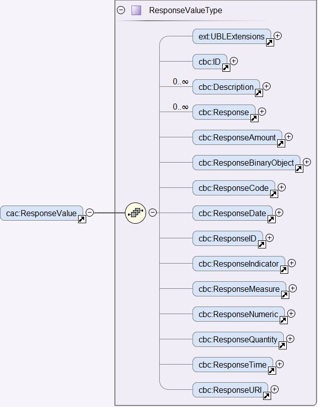
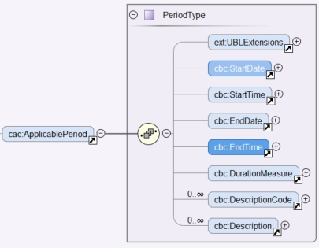
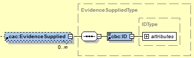

Answering QUESTIONs
REQUIREMENT |
The ESPD Response must include one criterion response (one answer), and only one, linked to one, and only one, criterion property (one QUESTION) copied from the ESPD Request into the ESPD Response document; and to each criterion property added by the economic operator to the ESDP Response. One criterion response, though, may contain a list of response values of the same type. |
REQUIREMENT |
If the response to a criterion property is marked as confidential the evidences linked to this criterion property must also be treated as confidential. |
The section Data Structures established a mapping between each data structure elements 'label' and the corresponding UBL-2.3 XML element of the cac:TenderingCriterion component. Thus:
-
REQUIREMENT_GROUP and QUESTION_GROUP are mapped to cac:TenderingCriterionPropertyGroup;
-
REQUIREMENT_SUBGROUP and QUESTION_SUBGROUP are mapped to cac:SubsidiaryTenderingCriterionPropertyGroup; and
-
REQUIREMENT and QUESTION are mapped to cac:TenderingCriterionProperty.
If you have a look at the data structure tables (the fragments of spread-sheets in previous chapters), you will observe that all groups and subgroups have a UUID associated. These UUID are generated by e-Certis and identify the structure inside the group or subgroup.
In the same data structures REQUIREMENT(s) and QUESTION(s) do not have a UUID assigned. This is because the UUID for each cac:TenderingCriterionProperty element has to be generated dynamically: each criterion property needs a unique identifier. The reasons are:
-
In the UBL-2.3 model the answers are separated from inside the criterion. This differs from the previous models of the ESPD-EDM. The motivation for this separation was to allow drafting QualificationApplicationResponse documents without having to copy every criterion from the QualificationApplicationRequest, having in mind other scenarios different to the European Single Procurement Document. This could be used, perhaps, by public administrations that would like to use the UBL-2.3 XSDs for "under-the-threshold contract" ESPDs. Even in that situation the QualificationApplicationResponse would need to refer to the specific QualificationApplicationRequest instance (so the UUIDs are exactly the ones that were automatically generated for that instance). Remember that this is not possible in the ESPD-EDM, as there is a specific requirement asking to copy every criterion from the QualificationApplicationRequest into the QualificationApplicationResponse; see this business requirement at the beginning of the section.
-
If the UUID of cac:TenderingCriterionProperty was 'fixed' (as are the groups and subgroups) one answer could refer to more than one REQUIREMENT or QUESTION; and this is not permissible (see business requirement above, one criterion property → one answer, one answer → one criterion property).
XSD Schema
To answer a QUESTION the ESPD-EDM uses the UBL-2.3 component cac:TenderingCriterionResponse. The expected elements are highlighted in blue in the figure below:

Figure 237. cac:TenderingCriterionResponse XSD element
To answer one QUESTION one of the different possible types of values from the cac:ResponseValue element (inside the cac:TenderingCriterionResponse) must be selected. In other words, the types of elements inside the cac:ResponseValue are all disjoint amongst themselves.
If the need is to build a list of values, a sequence of cac:ResponseValues shall be instantiated. See XML examples below.

Figure 238. cac:ResponseValue XSD element
The cac:ApplicablePeriod is used to hold the start date and the end-date provided by the economic operator to a QUESTION for which the expected data is of type 'PERIOD'. (See expected types in the Code List ResponseDataType).
|
Note for the future Future versions of UBL could consider moving this element inside the element cac:ResponseValue and rename it appropriately (or come up with a design approach different to the current one). |

Figure 239. cac:ApplicablePeriod XSD element
One answer to one QUESTION may be linked to multiple evidences. The XSD diagram below shows that to make this link possible the element cac:TenderingCriterionResponse element associates a class cac:EvidenceSupplied. This class contains only one basic information element, a cbc:ID. In UBL, except for cbc:Description, basic information elements (typically prefixed as cbc:) cannot be of multiple cardinality, but associated classes can. Thus the need to place the cbc:ID inside a class. This ID points at an instance of cac:Evidence present in the XML.
This design is an interesting feature as, by separating the evidence object instances from inside the response, one evidence may be used for different criteria. See the component cac:Evidence below in the section "8. Evidences". See also XML examples.

Figure 240. cac:EvidenceSupplied XSD element
Mock-ups and data structures
The answers to QUESTION(s) are provided in the example mock-ups of the previous sections about how the buyer specify REQUIREMENT(s) and QUESTION(s), and how the economic operator adds or removes instances of elements (such as data on the economic operator, references to similar works and services, etc. Please refer to those mock-ups and compare the values shown in the fields reserved for the EO to answer and compare those values with the ones in the example XML snippets below.
Responses are not associated to ESPD custom data structures. All the values regarding an answer are always placed in one instance of the UBL-2.3 data element cac:TenderingCriterionResponse.
Expected Elements
Table 40. Elements expected in an answer to a criterion property
Class name: |
cac:TenderingCriterionResponse |
Definition: |
A class to describe a response to a criterion property. |
Business rule(s): |
BR-RESP-80, BR-RESP-80-S10, BR-RESP-80-S20, Common (BR-LEAD-10) |
File: |
ubl-2.3/xsdrt/common/UBL-CommonAggregateComponents-2.3.xsd |
Path: |
/QualificationApplicationResponse/cac:TenderingCriterionResponse |
Context of use: |
The economic operator uses it in the ESPD Response document to answer a QUESTION. tbr92-018, tbr92-007, tbr92-005, tbr92-006. |
| Components | Type | Card | Description | Requirements |
|---|---|---|---|---|
cbc:ID |
Identifier |
0..1 |
A language-independent token, e.g., a number, that allows to identify a criterion response uniquely as well as allows to reference the criterion response in other documents. A criterion response describes how an economic operators fulfills an specific criterion. |
Information Requirement: tbr92-018, tbr92-007, tbr92-005, tbr92-006 Rule: This ID SHOULD be provided by the EO or the service provider that instantiates the ESPDResponse XML document. Rule scope: Common (BR-TCR-05, BR-OTH-02) |
cbc:ValidatedCriterionPropertyID |
Identifier |
1 |
A cross-reference to the criterion propertys which is validated thorugh this response expressed as an identifier. |
Information Requirement: tbr92-018, tbr92-007, tbr92-005, tbr92-006 Rule: This ID MUST point at one of the TenderingCriterionProperty/cbc:ID that were included in the Request document. Rule scope: Common (BR-RESP-30, BR-RESP-40, BR-RESP-60, BR-RESP-60-S10, BR-RESP-60-S20, BR-TCR-01, BR-TCR-03, BR-LEAD-10-S20, BR-LEAD-10-S30) |
cbc:ConfidentialityLevelCode |
Code |
0..1 |
A code specifying the confidentiality level of the given response for this criterion. |
Information Requirement: tbr92-018, tbr92-007, tbr92-005, tbr92-006 Rule: If the value is true, all the evidences associated to this response becomes also confidential. Rule scope: BR-TCR-02, BR-OTH-01, BR-OTH-01#19, BR-OTH-03 |
cac:ResponseValue |
Associated class |
0..n |
A class to describe the criterion property response value. |
Information Requirement: tbr92-018 Rule: This class contains the main disjoint elements used to provide the actual answer. The UBL-2.3 model provides cardinality 0..n, this allows for building up lists of, namely, identifier and code values that are all "packaged" into one cac:TenderingCriterionResponse that in turn is linked to one cac:TenderingCriterionProperty. Beware that the cardinality is flexible (0..whatever) because some responses are not simple values, like the ones but complex ones, e.g. cac:ApplicablePeriod and cac:EvidenceSupplied). Rule scope: Common (BR-TCR-08, BR-TCR-04) |
cac:ApplicablePeriod |
Associated class |
0..1 |
A class for the economic operator to specify the start date and the end-date when the expected answer to a criterion property is a lapse of time. |
Information Requirement: tbr92-018 Rule: The ESPD-EDM does only expect start date and end date. Software applications may take leverage of the richness of this class though for other purposes beyond the scope of this specification. |
cac:EvidenceSupplied |
Associated class |
0..1 |
A reference to the evidence supporting this criterion property response. |
Information Requirement: tbr92-017 Rule: Used to point at an instance of the cac:Evidence. |
|
| a| Disjointness of the elements inside cac:ResponseValue Beware that one cac:ResponseValue element contains the complete list of possible values for one answer to a criterion property. Only one type of element can be used to answer a criterion property, and that element MUST be of the same type as the one specified as expected in the ESPD Request (element cac:TenderingCriterionProperty/cac:ValueDataTypeCode). Thus, for example, if in the ESPD Request the expected type is DESCRIPTION the cac:ResponseValue must use the element cbc:Description, if INDICATOR cbc:ResponseIndicator, if IDENTIFIER cbc:ResponseID, etc. See the codes used for cac:ValueDataTypeCode in the Code List ResponseDataType. For the different possible values in the response see the XSD diagrams above and the list of the expected elements in cac:ResponseValue in the table below. This disjointness rule applies to the type of the value, but not to the values of the same type. Thus, for lists of values that constitute the actual answer (e.g. the list of LotIDs the economic operator tenders to, or a list of CPV codes to describe with granularity an activity), a sequence of cac:ResponseValues shall be instantiated in the XML. See the XML examples below. |
Table 41. Elements expected in the 'cac:ApplicablePeriod' class
Class name: |
cac:Period |
Definition: |
A class to describe a period of time. |
Business rule(s): |
None |
File: |
ubl-2.3/xsdrt/common/UBL-CommonAggregateComponents-2.3.xsd |
Path: |
/QualificationApplicationResponse/cac:TenderingCriterionResponse/cac:ApplicablePeriod |
Context of use: |
A class for the economic operator to specify the start date and the end-date when the expected answer to a criterion property is a lapse of time; tbr92-018. |
| Components | Type | Card | Description | Requirements |
|---|---|---|---|---|
cbc:StartDate |
Date |
0..1 |
The date on which this period begins. |
Information Requirement: tbr92-018 Rule: Expected format 'YYYY-MM-DD'. |
cbc:EndDate |
Date |
0..1 |
The date on which this period ends. |
Information Requirement: tbr92-018 Rule: Expected format 'YYYY-MM-DD'. |
| Table 42. Elements expected in the 'cac:EvidenceSupplied' class | |
|---|---|
Class name: |
cac:EvidenceSupplied |
Definition: |
A reference to the evidence supporting this criterion property response. |
Business rule(s): |
None |
File: |
ubl-2.3/xsdrt/common/UBL-CommonAggregateComponents-2.3.xsd |
Path: |
/QualificationApplicationResponse/cac:TenderingCriterionResponse/cac:EvidenceSupplied |
Context of use: |
Used to refer to one ore more evidences that are present in the QualificationApplicationResponse XML instance; tbr92-017. |
| Components | Type | Card | Description | Requirements |
|---|---|---|---|---|
cbc:ID |
Identifier |
1 |
The identifier of the referenced evidence. |
Information Requirement: tbr92-018 Rule: The expected identifier must match the value of a cac:Evidence/cbc:ID present in the XML document. Rule scope: Common (BR-TCR-09, BR-OTH-0) |
The table below lists the elements expected in the sub-class cac:ResponseValue. Remember that the elements of distinct types are all disjoint amongst themselves: i.e. you cannot associate one amount AND one indicator to the same cac:TenderingCriterionProperty element (but several values for elements of one type may be used to build up lists, e.g. lists of Lots and lists of CPV codes).
Table 43. Elements expected in the 'cac:ResponseValue' class
Class name: |
cac:ResponseValue |
Definition: |
A class to describe the criterion property response value. |
Business rule(s): |
Common (BR-TCR-08, BR-TCR-04) |
File: |
ubl-2.3/xsdrt/common/UBL-CommonAggregateComponents-2.3.xsd |
Path: |
/QualificationApplicationResponse/cac:TenderingCriterionResponse/cac:ResponseValue |
Context of use: |
Used to specify one value or a collection of values (in the case of a list) as a response to one, and only one, cac:TenderingCriterionProperty that is typified as a QUESTION. |
| Components | Type | Card | Description | Requirements |
|---|---|---|---|---|
cbc:ID |
Identifier |
0..1 |
An identifier to refer to this criterion response value. |
Information Requirement: tbr92-018 Rule: Recommendation: use a UUDI-version 4 number. Rule scope: BR-TCR-05 |
cbc:Description |
Text |
0..n |
A description used as a reply to the criterion property. |
Information Requirement: tbr92-018 Rule: The ESPD-EDM uses this element to place a response that is a string. UBL-2.3 instead uses cbc:Response, for this. This is something that needs to be reviewed and agreed between ESPD-EDM and future versions of the UBL. See the XML provided in this ESPD-EDM specifications for details on its usage. |
cbc:ResponseAmount |
Amount |
0..1 |
An amount used as a reply to the criterion property. |
Information Requirement: tbr92-018 Rule: The currencyID attribute is MANDATORY (e.g. "EUR"). Compulsory use of the code list "ISO 4217 3A:2015". BEWARE that amounts can use decimal separators (e.g. 14134,95 but not hundred or thousand separators). Rule scope: Common (BR-OTH-01, BR-OTH-01#17, BR-OTH-03) |
cbc:ResponseCode |
Code |
0..1 |
A code used as a reply to the criterion property. |
Information Requirement: tbr92-018 Rule: Compulsory use of the attributes mentioned in the section "1.5 Codes and Identifiers" for codes. Rule scope: Common (BR-OTH-01) |
cbc:ResponseDate |
Date |
0..1 |
A date used as a reply to the criterion property. |
Information Requirement: tbr92-018 Rule: Format 'YYYY-MM-DD'. |
cbc:ResponseTime |
Time |
0..1 |
A time used as a reply to the criterion property. |
Information Requirement: tbr92-018 Rule: Format 'HH:MM:SS'. |
cbc:ResponseID |
Identifier |
0..1 |
An identifier used as a reply to the criterion property. |
Information Requirement: tbr92-018 Rule: Compulsory use of the attributes mentioned in the section "1.5 Codes and Identifiers" for codes. |
cbc:ResponseIndicator |
Indicator |
0..1 |
An indicator used as a reply to the criterion property. |
Information Requirement: tbr92-018 Rule: The only possible values are False and True. Rule scope: Common (BR-TCR-06, BR-TCR-07) |
cbc:ResponseMeasure |
Measure |
0..1 |
A measure used as a reply to the criterion property. |
Information Requirement: tbr92-018 Rule: None. |
cbc:ResponseNumeric |
Numeric |
0..1 |
A number used as a reply to the criterion property. |
Information Requirement: tbr92-018 Rule: Do not format the percentage with the "%" symbol, just provide a float value like in the example (e.g. 0.4). |
cbc:ResponseQuantity |
Quantity |
0..1 |
A quantity used as a reply to the criterion property. |
Information Requirement: tbr92-018 Rule: BEWARE that different types of Quantities can be required, some of them with a special attribute. Up to three different types of Quantities can be specified: (1) QUANTITY_INTEGER, a number representing a quantity in a specific unit of measure. The unit has to be specified (e.g. number of workers); (2) QUANTITY_YEAR, a non-negative integer (i.e. a natural number) representing a year. The unit has to be specified as YEAR, and (3) QUANTITY, a number representing a generic quantity with no unit specified (e.g. a ratio). Beware that in the case of QUANTITY_INTEGER and QUANTITY_YEAR the attribute unitCode MUST be always specified. |
cbc:ResponseURI |
URI |
0..1 |
A URI used as a reply to the criterion property. |
Information Requirement: tbr92-018 Rule: None. |
Request/Response XML Example
To start with a simple example let us re-take the last case presented in section Reduction of candidates.
The first thing to take into account is that the responses go at the end of the document, just after the last set of REQUIREMENT(s) and QUESTION(s) that were copied from the ESPD-Request into the ESPD-Response, and before the evidences.
The second important thing is to keep in mind is that each response is linked to one, and only one, QUESTION via the identifier of that QUESTION.
Having said this, imagine that the following snippet of XML code is the last criterion from the ESPD-Request that has been instantiated in your ESPD-Response (pay attention to the bullets and comments under the example).
Reduction of Candidates - (QUESTION(s) in the ESPD-Request)
<!-- ... beginning of document removed for brevity -->
<!-- Criterion:Reduction of the number of qualified candidates -->
<cac:TenderingCriterion>
<cbc:ID schemeID="criterion" schemeAgencyID="OP" schemeVersionID="3.2.0">51c39ba9-0444-4967-afe9-36f753b30175</cbc:ID>
<cbc:CriterionTypeCode listID="http://publications.europa.eu/resource/authority/criterion" listAgencyID="OP" listVersionID="20210616-0">staff-red</cbc:CriterionTypeCode>
<cbc:Name>Reduction of the number of qualified candidates</cbc:Name>
<cbc:Description>The economic operator declares that It meets the objective and non discriminatory criteria or rules to be applied in order to limit the number of candidates in the following way:</cbc:Description>
<cac:ProcurementProjectLotReference>
<cbc:ID schemeID="Criterion" schemeAgencyID="OP" schemeVersionID="3.2.0">LOT-00000</cbc:ID>
</cac:ProcurementProjectLotReference>
<cac:ProcurementProjectLotReference>
<cbc:ID schemeID="Criterion" schemeAgencyID="OP" schemeVersionID="3.2.0">LOT-00001</cbc:ID>
</cac:ProcurementProjectLotReference>
<cac:TenderingCriterionPropertyGroup>
<cbc:ID schemeID="criterion" schemeAgencyID="OP" schemeVersionID="3.2.0">ecc69670-f428-4446-908f-689568ca0d0d</cbc:ID>
<cbc:PropertyGroupTypeCode listID="property-group-type" listAgencyID="OP" listVersionID="3.2.0">ON*</cbc:PropertyGroupTypeCode>
<cac:TenderingCriterionProperty>
<cbc:ID schemeID="criterion" schemeAgencyID="OP" schemeVersionID="3.2.0">de82e45f-a0f6-43a6-9761-bfae3385fd1d</cbc:ID>
<cbc:Description>Your answer?</cbc:Description>
<cbc:TypeCode listID="criterion-element-type" listAgencyID="OP" listVersionID="3.2.0">QUESTION</cbc:TypeCode>
<cbc:ValueDataTypeCode listID="response-data-type" listAgencyID="OP" listVersionID="3.2.0">INDICATOR</cbc:ValueDataTypeCode>
</cac:TenderingCriterionProperty>
<cac:SubsidiaryTenderingCriterionPropertyGroup>
<cbc:ID schemeID="criterion" schemeAgencyID="OP" schemeVersionID="3.2.0">f13754df-7e15-4155-aaa6-7ca6407baa47</cbc:ID>
<cbc:PropertyGroupTypeCode listID="property-group-type" listAgencyID="OP" listVersionID="3.2.0">ONTRUE</cbc:PropertyGroupTypeCode>
<cac:TenderingCriterionProperty>
<cbc:ID schemeID="criterion" schemeAgencyID="OP" schemeVersionID="3.2.0">ffc141f8-5ffe-4492-9066-7ff5dd633583</cbc:ID>
<cbc:Description>Please describe them</cbc:Description>
<cbc:TypeCode listID="criterion-element-type" listAgencyID="OP" listVersionID="3.2.0">QUESTION</cbc:TypeCode>
<cbc:ValueDataTypeCode listID="response-data-type" listAgencyID="OP" listVersionID="3.2.0">DESCRIPTION</cbc:ValueDataTypeCode>
</cac:TenderingCriterionProperty>
</cac:SubsidiaryTenderingCriterionPropertyGroup>
</cac:TenderingCriterionPropertyGroup>
<cac:TenderingCriterionPropertyGroup>
<cbc:ID schemeID="criterion" schemeAgencyID="OP" schemeVersionID="3.2.0">7458d42a-e581-4640-9283-34ceb3ad4345</cbc:ID>
<cbc:PropertyGroupTypeCode listID="property-group-type" listAgencyID="OP" listVersionID="3.2.0">ON*</cbc:PropertyGroupTypeCode>
<cac:TenderingCriterionProperty>
<cbc:ID schemeID="criterion" schemeAgencyID="OP" schemeVersionID="3.2.0">01a08984-328f-4bc8-88d9-56634e66ca3c</cbc:ID>
<cbc:Description>Is this information available electronically?</cbc:Description>
<cbc:TypeCode listID="criterion-element-type" listAgencyID="OP" listVersionID="3.2.0">QUESTION</cbc:TypeCode>
<cbc:ValueDataTypeCode listID="response-data-type" listAgencyID="OP" listVersionID="3.2.0">INDICATOR</cbc:ValueDataTypeCode>
</cac:TenderingCriterionProperty>
<cac:SubsidiaryTenderingCriterionPropertyGroup>
<cbc:ID schemeID="criterion" schemeAgencyID="OP" schemeVersionID="3.2.0">41dd2e9b-1bfd-44c7-93ee-56bd74a4334b</cbc:ID>
<cbc:PropertyGroupTypeCode listID="property-group-type" listAgencyID="OP" listVersionID="3.2.0">ONTRUE</cbc:PropertyGroupTypeCode>
<cac:TenderingCriterionProperty>
<cbc:ID schemeID="criterion" schemeAgencyID="OP" schemeVersionID="3.2.0">fe61b9a7-9e60-45eb-98c9-cd7102a86013</cbc:ID>
<cbc:Description>Evidence Supplied</cbc:Description>
<cbc:TypeCode listID="criterion-element-type" listAgencyID="OP" listVersionID="3.2.0">QUESTION</cbc:TypeCode>
<cbc:ValueDataTypeCode listID="response-data-type" listAgencyID="OP" listVersionID="3.2.0">EVIDENCE_IDENTIFIER</cbc:ValueDataTypeCode>
</cac:TenderingCriterionProperty>
</cac:SubsidiaryTenderingCriterionPropertyGroup>
</cac:TenderingCriterionPropertyGroup>
</cac:TenderingCriterion>
<!-- ... rest of document removed for brevity -->-
First QUESTION (a criterion property of type QUESTION, the type follows below).
-
The buyer is requesting to the economic Operator that it states whether it meets the ''objective and non-discriminatory criteria or rules [..]".
-
The type of the criterion property: QUESTION.
-
The type of data that the economic operator (EO) will have to provide in the response (true or false).
-
The next QUESTION is enclose in a SUBGROUP because the processing instruction ONTRUE can be used only by GROUPs or SUBGROUPs of REQUIREMENTs and QUESTIONs.
-
If the previous QUESTION is answered with a true the EO will be presented with a new demand expressed in th next QUESTION.
-
The QUESTION ''Please describe them'', presented if the EO answered true to the previous QUESTION (''Your answer'').
-
The type of data expected here is a free text bythe EO (for the Response, a DESCRIPTION maps to the UBL-2.3 element cbc:Description, which is an extension of the xsd:String).
XML example (Responses to the QUESTION(s))
This other XML snippet below shows the responses to the two QUESTION(s) expressed in the ESPD-Request for this criterion (the block related to evidences is omitted for the sake of clarity and brevity):
Reduction of Candidates - (answers in the ESPD-Response)
<!-- ... beginning of document removed for brevity -->
<cac:TenderingCriterionResponse>
<cbc:ID schemeID="ISO/IEC 9834-8:2008 - 4UUID" schemeAgencyID="OP" schemeVersionID="3.2.0">d47daca4-4a27-4461-9db9-f483d3b7a114</cbc:ID>
<cbc:ValidatedCriterionPropertyID schemeID="criterion" schemeAgencyID="OP" schemeVersionID="3.2.0">c110177c-aa9a-4acd-809a-79a2353a41ef</cbc:ValidatedCriterionPropertyID>
<cac:ResponseValue>
<cbc:ID schemeID="ISO/IEC 9834-8:2008 - 4UUID" schemeAgencyID="OP" schemeVersionID="3.2.0">de6f1bdd-abce-42f7-b9b8-30c4e7c4c94d</cbc:ID>
<cbc:ResponseIndicator>true</cbc:ResponseIndicator>
</cac:ResponseValue>
</cac:TenderingCriterionResponse>
<cac:TenderingCriterionResponse>
<cbc:ID schemeID="ISO/IEC 9834-8:2008 - 4UUID" schemeAgencyID="OP" schemeVersionID="3.2.0">d47daca4-4a27-4461-9db9-f483d3b7a114</cbc:ID>
<cbc:ValidatedCriterionPropertyID schemeID="criterion" schemeAgencyID="OP" schemeVersionID="3.2.0">e437cac1-3a89-4f36-bcc7-3219dda49d30</cbc:ValidatedCriterionPropertyID>
<cac:ResponseValue>
<cbc:ID schemeID="ISO/IEC 9834-8:2008 - 4UUID" schemeAgencyID="OP" schemeVersionID="3.2.0">de6f1bdd-abce-42f7-b9b8-30c4e7c4c94d</cbc:ID>
<cbc:Description>This Consortium fulfills all the conditions defined by the buyer in the contract notice, and notably
the Consortium is duly registered in the national pre-qualification system of the country of the Consortium lead where
all the information about its classification and documentation about its financial standing are up to the date.</cbc:Description>
</cac:ResponseValue>
</cac:TenderingCriterionResponse>
<!-- ... rest of document removed for brevity -->-
Notice this UUID is identical to the cac:TenderingCriterionProperty one. This is the way the UBL-2.3 Qualification Application Response document links each QUESTION(s) to one response (and only one), or viceversa.
-
The economic operator states here that it meets the criteria. Notice that the data element is the UBL-2.3 element cbc:ResponseIndicator, which is an ''semantisation'' (a specialisation) of cbc:Indicator and therefore corresponds to the type of data expected by the buyer in the Request (in cbc:ValueDataTypeCode).
-
This is the UUID corresponding to the QUESTION in the Request ''Please describe them''.
-
The economic operator describes how it meets the criteria. The data element containing the explanation by the EO. Notice that the type of data is the UBL-2.3 element cbc:Description, as requested by the buyer in cbc:ValueDataTypeCode.